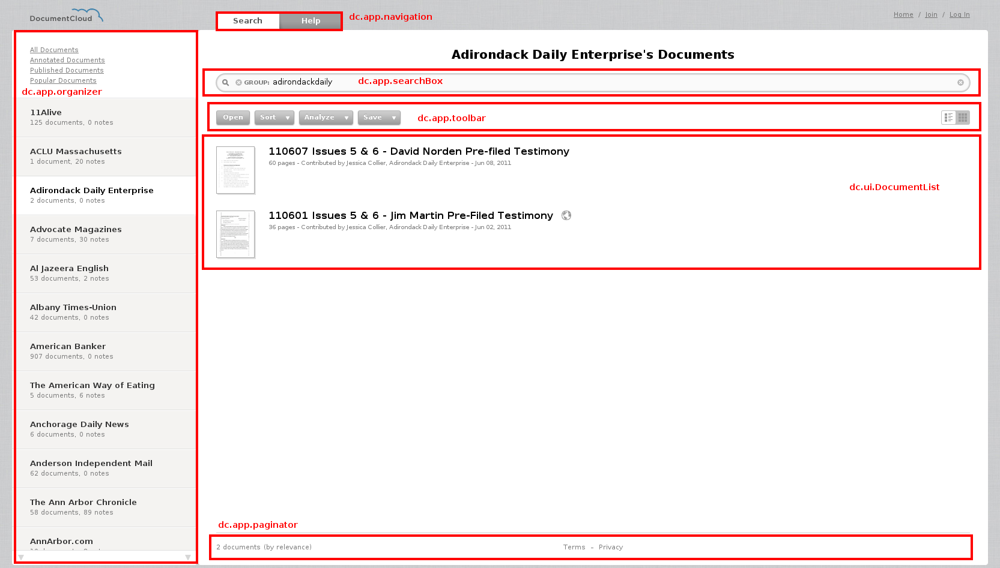

Your browser doesn't support the features required by impress.js, so you are presented with a simplified version of this presentation.
For the best experience please use the latest Chrome or Safari browser. Firefox 10 (to be released soon) will also handle it.
Document Cloud
Lecture commentée des sources.
Why Backbone is important to you?
Without a backbone you could not stand up at all.
They also protect your spinal cord and nerves from damage and are a direct path to the brain.
Why Document Cloud ?
 Jeremy Ashkenas
Jeremy Ashkenas
@jashkenas
@jashkenas
Structuration de Backbone
- Vues
- Objets
- Evenements
- Modèles et Collections
- Structuration du code
Source
$(function() {
window.HomePage = Backbone.View.extend({
FAVORITES_URL : '//twitter.com/favorites/documentcloud.json?callback=?',
el : document.body,
events : {
'click #login_button': 'login'
},
initialize : function() {
//...
},
login : function() {
this.$('#login_form').submit();
}
});
window.homepage = new HomePage();
});
Découper le DOM en plusieurs vues
Par défaut non attaché au DOM.
Mais on peut l'attaché à l'initialisation
el : document.body
el : '#help ul'
Découper le DOM en plusieurs vues
Ou plus tard
this.panel.add('search_box', dc.app.searchBox.render().el);
this.panel.add('pagination', dc.app.paginator.el);
this.panel.add('search_toolbar', dc.app.toolbar.render().el);
this.panel.add('document_list', this.documentList.render().el);
this.sidebar.add('entities', this.entityList.render().el);

Et s'y tenir
_renderReviewers : function() {
// ...
this.$('.account_list_content tr:not(.reviewer_management)').remove();
this.$('.account_list_content').prepend(views);
this.$('.document_reviewers_empty').toggle(!_.keys(this.renderedAccounts).length);
this._cancelAddReviewer();
},
_setPlaceholders : function() {
this.$('input[name=first_name], input[name=last_name]').placeholder();
// ...
},
Uniformiser les interactions avec le DOM
events : {
'keydown #search_box': 'maybeSearch',
'search #search_box': 'search',
'focus #search_box': 'addFocus',
'blur #search_box': 'removeFocus',
'click .cancel_search': 'cancelSearch',
'click #login_button': 'login'
},
Uniformiser la manipulation du DOM
dc.ui.Menu = Backbone.View.extend({
render : function() {
$(this.el).html(JST['common/menubutton']({label : this.options.label}));
this._label = this.$('.label');
return this;
},
Une machine à état non persistée
./ui/common/menu.js: this.setMode('is', 'open');
./ui/common/menu.js: this.setMode('not', 'open');
./ui/common/menu.js: this.setMode('is', 'enabled');
./ui/common/menu.js: this.setMode('not', 'enabled');
./ui/common/menu.js: this.setMode('is', 'active');
./ui/common/menu.js: this.setMode('not', 'active');
// Makes the view enter a mode. Modes have both a 'mode' and a 'group',
// and are mutually exclusive with any other modes in the same group.
// Setting will update the view's modes hash, as well as set an HTML class
// of *[mode]_[group]* on the view's element. Convenient way to swap styles
// and behavior.
Backbone.View.prototype.setMode = function(mode, group) {
this.modes || (this.modes = {});
if (this.modes[group] === mode) return;
$(this.el).setMode(mode, group);
this.modes[group] = mode;
};
Pour utiliser le sucre syntaxique de Backbone.
window.HomePage = Backbone.View.extend({
events : {
'keydown #search_box': 'maybeSearch',
'search #search_box': 'search',
'focus #search_box': 'addFocus',
'blur #search_box': 'removeFocus',
'click .cancel_search': 'cancelSearch',
'click #login_button': 'login'
},
login : function() { /* ... */ },
search : function() { /* ... */ },
cancelSearch : function() { /* ... */ },
maybeSearch : function() { /* ... */ },
addFocus : function() { /* ... */ },
removeFocus : function() { /* ... */ }
});
Source
Initialize
initialize : function() {
dc.ui.notifier = new dc.ui.Notifier();
this.box = $('#search_box');
this.emailInput = $('#account_email');
this.passwordInput = $('#account_password');
_.invoke([this.box, this.emailInput, this.passwordInput], 'placeholder');
$(_.bind(this.loadTweets, this));
},
Constantes
En haut en majuscule, facile à repérer.
dc.controllers.Searcher = Backbone.Router.extend({
// Error messages to display when your search returns no results.
NO_RESULTS : {
project : "This project does not contain any documents.",
account : "This account does not have any documents.",
group : "This organization does not have any documents.",
related : "There are no documents related to this document.",
published : "This account does not have any published documents.",
annotated : "There are no annotated documents.",
search : "Your search did not match any documents.",
all : "There are no documents."
},
PAGE_MATCHER : (/\/p(\d+)$/),
DOCUMENTS_URL : '/search/documents.json',
FACETS_URL : '/search/facets.json',
Un objet pour découper notre code
initialize : function() {
this.createSubViews();
this.renderSubViews();
dc.app.searcher = new dc.controllers.Searcher;
},
createSubViews : function() {
this.sidebar = new dc.ui.Sidebar();
this.panel = new dc.ui.Panel();
this.documentList = new dc.ui.DocumentList();
this.entityList = new dc.ui.EntityList();
// ...
},
renderSubViews : function() {
var content = this.$('#content');
content.append(this.sidebar.render().el);
content.append(this.panel.render().el);
this.panel.add('document_list', this.documentList.render().el);
this.sidebar.add('entities', this.entityList.render().el);
// ...
Pour partager un état
initialize : function() {
_.bindAll(this, '_loadFacetResults');
}
loadFacet : function(facet) {
dc.ui.spinner.show();
this.currentSearch = $.get(this.FACETS_URL, {q : this.searchBox.value(), facet : facet}, this._loadFacetResults, 'json');
},
_loadFacetResults : function(resp) {
dc.app.workspace.entityList.mergeFacets(resp.facets, 500, resp.query.total);
dc.ui.spinner.hide();
this.currentSearch = null;
}
search : function(query, pageNumber, callback) {
dc.ui.spinner.show();
dc.app.navigation.open('search');
if (this.currentSearch) this.currentSearch.abort();
// ...
Source
Pour faire des factories
dc.ui.Dialog = Backbone.View.extend({
options : {
title : "Untitled Dialog",
text : null,
information : null,
description : null,
choices : null,
password : false,
editor : false,
draggable : true
},
// ...
}
_.extend(dc.ui.Dialog, {
alert : function(text, options) {
return new dc.ui.Dialog(_.extend({
mode : 'alert',
title : null,
text : text
}, options)).render();
},
// ...
Source
Pour créer des classes filles
dc.ui.ProjectDialog = dc.ui.Dialog.extend({
constructor : function(options) {
this.model = options.model;
dc.ui.Dialog.call(this, {
mode : 'custom',
title : 'Edit Project'
});
},
render : function(noHide) {
if (!noHide) $(this.el).hide();
dc.ui.Dialog.prototype.render.call(this, {editor : true, information : this.model.statistics()});
// ...
}
Source
Pour découpler son code
$ grep -R "tab:" .
./ui/workspace/navigation.js: if (!(silent === true)) this.trigger('tab:' + name);
./ui/workspace/navigation.js: this.bind('tab:entities', _.bind(function() {
./ui/workspace/help.js: dc.app.navigation.bind('tab:help', _.bind(this.openHelpTab, this));
./ui/documents/upload_dialog.js: dc.app.navigation.bind('tab:documents', _.bind(function(){
./app/searcher.js: dc.app.navigation.bind('tab:search', this.loadDefault);
Un modèle/collection riche en code métier
dc.model.Document = Backbone.Model.extend({
publishAtDate : function() {
var date = this.get('publish_at');
return date && DateUtils.parseRfc(date);
},
formattedPublishAtDate : function() {
var date = this.publishAtDate();
return date && (this.formatDay(date) + ' at ' + this.formatTime(date));
},
// ...
dc.model.DocumentSet = Backbone.Collection.extend({
model : dc.model.Document,
downloadSelectedFullText : function() {
if (this.selectedCount <= 1) return this.selected()[0].openText();
dc.app.download('/download/' + this.selectedIds().join('/') + '/document_text.zip');
},
Source
Un modèle pour synchroniser l'état des ressources
// Fetch all of the documents page mentions for a given search query.
fetchMentions : function(query) {
$.getJSON(this.url() + '/mentions', {q: query}, _.bind(function(resp) {
this.set(resp);
}, this));
},
// Tell the server to reprocess the text for this document.
reprocessText : function(forceOCR) {
var params = {};
if (forceOCR) params.ocr = true;
$.ajax({
url : this.url() + '/reprocess_text',
data : params,
type : 'POST',
dataType : 'json',
success : _.bind(function(resp) {
this.set({access : dc.access.PENDING});
}, this)});
},
Source
Ce qui entraine une réactualisation des vues
dc.ui.Document = Backbone.View.extend({
constructor : function(options) {
// ...
this.model.bind('change', this._onDocumentChange);
this.model.bind('change:selected', this._setSelected);
this.model.bind('focus', this.focus);
this.model.bind('view:pages', this.viewPages);
this.model.bind('notes:hide', this.hideNotes);
this.model.notes.bind('add', this._addNote);
this.model.notes.bind('reset', this._renderNotes);
this.model.entities.bind('load', this._renderEntities);
this.model.pageEntities.bind('reset', this._renderPages);
}
_onDocumentChange : function() {
if (this.model.hasChanged('selected')) return;
this.render();
},
_setSelected : function() {
var sel = this.model.get('selected');
this.setMode(sel ? 'is' : 'not', 'selected');
}
Un model constitué de sous-model
dc.model.Document = Backbone.Model.extend({
constructor : function(attrs, options) {
// ...
this.notes = new dc.model.NoteSet();
this.notes.url = function() {
return '/documents/' + id + '/annotations';
};
if (this.get('annotations')) this.notes.reset(this.get('annotations'));
Surtout du READ
La structure des fichiers
├── application.js
├── app
├── lib
├── model
├── ui
│ ├── accounts
│ ├── common
│ ├── documents
│ ├── metadata
│ ├── organizer
│ ├── search
│ └── workspace
└── vendor
Un namespace commun
(function() {
window.dc = {};
dc.controllers = {};
dc.model = {};
dc.app = {};
dc.ui = {};
})();
Source
Contenant les classes et les instances
createSubViews : function() {
dc.app.paginator = new dc.ui.Paginator();
dc.app.navigation = new dc.ui.Navigation();
dc.app.toolbar = new dc.ui.Toolbar();
dc.app.organizer = new dc.ui.Organizer();
dc.ui.notifier = new dc.ui.Notifier();
dc.ui.tooltip = new dc.ui.Tooltip();
Source
Initialisé à un seul endroit
dc.controllers.Workspace = Backbone.Router.extend({
// ...
createSubViews : function() {
dc.app.paginator = new dc.ui.Paginator();
dc.app.navigation = new dc.ui.Navigation();
dc.app.toolbar = new dc.ui.Toolbar();
dc.app.organizer = new dc.ui.Organizer();
dc.ui.notifier = new dc.ui.Notifier();
dc.ui.tooltip = new dc.ui.Tooltip();
dc.app.searchBox = VS.init(this.searchOptions());
this.sidebar = new dc.ui.Sidebar();
this.panel = new dc.ui.Panel();
this.documentList = new dc.ui.DocumentList();
this.entityList = new dc.ui.EntityList();
if (!dc.account) return;
dc.app.uploader = new dc.ui.UploadDialog();
dc.app.accounts = new dc.ui.AccountDialog();
this.accountBadge = new dc.ui.AccountView({model : Accounts.current(), kind : 'badge'});
},
Source
Afin d'intéragir plus simplement entre module.
dc.ui.Document = Backbone.View.extend({
// ...
searchAccount : function() {
dc.app.searcher.addToSearch('account', this.model.get('account_slug'));
},
searchOrganization : function() {
dc.app.searcher.addToSearch('group', this.model.get('organization_slug'));
},
searchSource : function() {
dc.app.searcher.addToSearch('source', this.model.get('source').replace(/"/g, '\\"'));
},
searchData : function(e) {
var el = $(e.currentTarget);
var key = el.find('.data_key').text().replace(/:$/, '');
var value = el.find('.data_value').text();
dc.app.searcher.toggleSearch(key, value);
},
});
Source
Des templates compilés
dc.ui.Menu = Backbone.View.extend({
constructor : function(options) {
this.content = $(JST['common/menu'](this.options));
},
render : function() {
$(this.el).html(JST['common/menubutton']({label : this.options.label}));
this._label = this.$('.label');
$(document.body).append(this.content);
return this;
},
<div class="wrapper">
<div class="label">
<%= label %>
</div>
</div>
<div class="corner"></div>
Source JS
JST
From Jammit
Backbone patterns